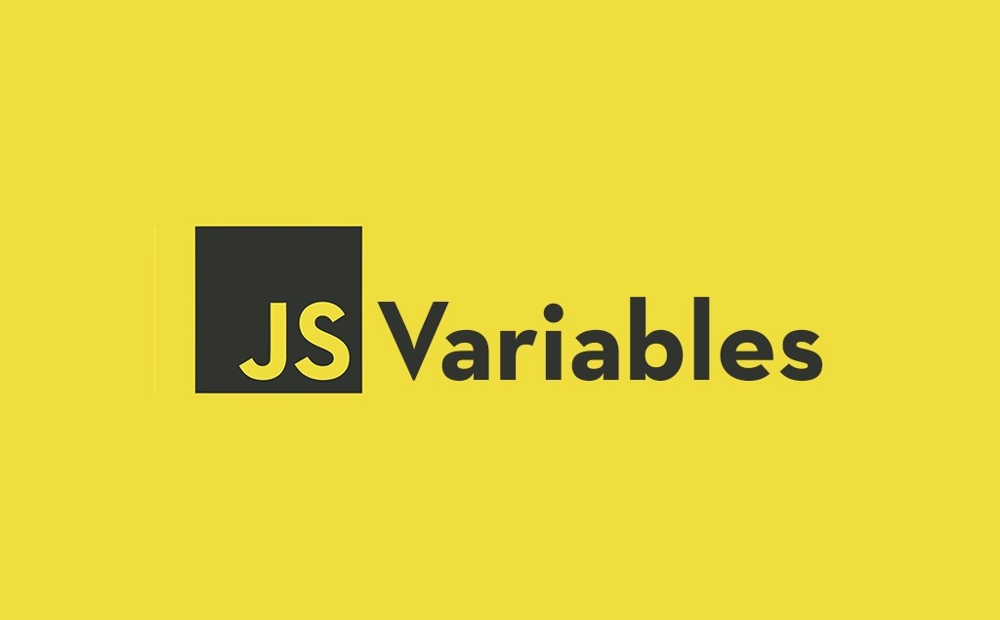
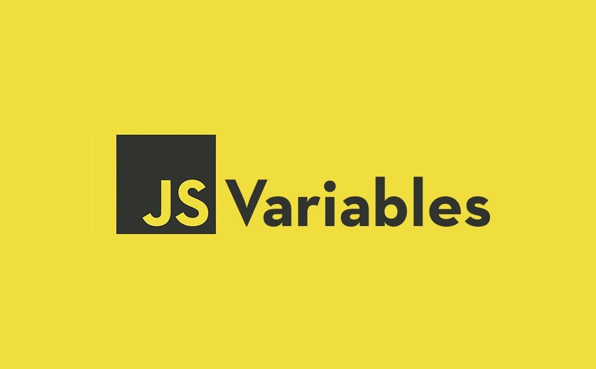

üìö ¬øQu√© es una variable en JavaScript?
Una variable en JavaScript es un espacio en memoria reservado para almacenar un dato o valor que puede cambiar durante la ejecución del programa.
Se utilizan para guardar información como números, cadenas de texto, objetos, listas, entre otros.
üìå Formas de declarar variables en JavaScript
Desde ES6, JavaScript ofrece tres formas principales de declarar variables:
| Forma de declaración | Alcance | Características |
|---|---|---|
| var | Función | Antiguo, poco recomendado. Puede redeclararse y reasignarse. |
| let | Bloque | Recomendado para variables que cambian. Solo puede declararse una vez en el mismo bloque. |
| const | Bloque | Recomendado para valores que no van a cambiar (constantes). |
Ejemplos:
var nombre = "Juan"; // Declaración con var
let edad = 25; // Declaración con let
const PI = 3.1416; // Declaración con const
üìå Tipos de datos que pueden almacenar las variables
JavaScript es un lenguaje de tipado dinámico, por lo que una variable puede contener cualquier tipo de dato y puede cambiar de tipo durante la ejecución.
| Tipo de Dato | Ejemplo |
|---|---|
| Number (Número) | let numero = 10; |
| String (Cadena de texto) | let texto = "Hola mundo"; |
| Boolean (Booleano) | let esMayor = true; |
| Undefined | let x; (valor por defecto si no se inicializa) |
| Null | let y = null; |
| Object (Objeto) | let persona = {nombre: "Ana", edad: 30}; |
| Array (Arreglo) | let numeros = [1, 2, 3]; |
| Function (Función) | let saludo = function() { console.log("Hola"); }; |
| Symbol | let id = Symbol("id"); |
| BigInt | let numeroGrande = 12345678901234567890n; |
üìå √Åmbito o Scope de las variables
El scope (alcance) determina desde dónde puedes acceder a una variable.
- Global Scope: Se puede acceder desde cualquier parte del código.
- Function Scope: Accesible solo dentro de la función donde fue declarada (usando
var). - Block Scope: Accesible solo dentro del bloque
{}donde fue declarada (usandoletoconst).
Ejemplo de scope:
function ejemplo() {
let x = 10;
console.log(x); // Funciona
}
console.log(x); // Error: x no está definida
üìå Hoisting (Elevaci√≥n)
JavaScript primero eleva las declaraciones de variables (solo las declaraciones, no las asignaciones):
- Las variables declaradas con
varson elevadas pero inicializadas comoundefined. - Las variables con
letyconsttambién son elevadas pero no pueden usarse antes de ser declaradas (provocan error si lo intentas).
üìå Reglas y buenas prácticas al nombrar variables
✔️ Reglas válidas:
- Solo pueden contener letras, números,
$y_. - No pueden empezar con un número.
- No usar palabras reservadas del lenguaje.
✔️ Buenas prácticas:
- Usar nombres descriptivos:
let edadUsuarioen vez delet x. - Seguir la convención camelCase: Ejemplo:
numeroDeClientes. - Mantener consistencia: No mezclar idiomas o estilos.
üìå Ejemplo completo:
const nombre = "Lucas";
let edad = 28;
var ciudad = "Buenos Aires";
if (edad > 18) {
let mensaje = "Es mayor de edad";
console.log(mensaje);
}
üìå Resumen Final
- ✅ JavaScript permite una gran flexibilidad con las variables gracias a su tipado dinámico.
- ✅ Se recomienda usar let y const en lugar de var para evitar problemas de scope.
- ✅ Elegir nombres descriptivos y consistentes mejora la legibilidad del código.